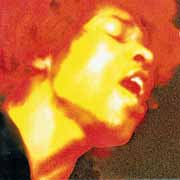
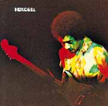

За последние тридцать лет звукозаписывающие компании заработали на издании и переиздании творческого наследия Джими Хендрикса, возможно, большее количество денег, чем на тиражировании посмертных записей всех других исполнителей вместе взятых. В период с 1970 по 1997 год ежегодно издавались десятки альбомов, охотно покупавшиеся не только коллекционерами, но и просто любителями творчества музыканта. Дело даже не в том, что Джими был очень плодовитым композитором, хотя и записал за каких-то четыре года более 70 замечательных песен. В любом случае их хватило бы максимум на 10 пластинок да еще на такое же количество компиляций. Основным источником материала для подобных многочисленных изданий стал студийный архив Хендрикса — более ста часов песенных заготовок, импровизаций и экспериментов со звучанием гитары.
Кто только не издавал Хендрикса! Любой более-менее серьезный коллекционер сразу же скажет вам, что, например, южноафриканская версия альбома «Are You Experienced?» является чрезвычайно редким и дорогим изданием, поскольку отличается от американской записи тем, что в ней использован другой вариант «Red House»... Или же вам могут предложить за пару сотен долларов купить уникальную концертную запись, сделанную из зала при помощи испорченного лампового магнитофона во время одного из концертов. Не важно, что на ней трудно что-либо разобрать — главное, что это еще одна пластинка, на которой можно услышать казалось бы знакомые, но вместе с тем и совершенно иные песни Джими Хендрикса. Можно даже предположить, что коллекционировать Хендрикса совсем не скучно, ведь творчество (как и жизнь) этого музыканта было сплошной импровизацией. Сколько бы раз Джими не исполнял одну и ту же песню, ее каждый новый вариант нес в себе нечто совершенно новое. Возможно, благодаря именно этому свойству его песен, коллекционеров Хендрикса и оказалось намного большее количество, чем можно было предположить.
Учитывая такой повышенный интерес к музыке Джими Хендрикса, американский продюсер Alan Douglas, после смерти музыканта получивший доступ к архиву, занялся «дописыванием» незаконченных произведений. Он приглашал к себе в студию сессионных басистов и барабанщиков и с их помощью превращал заготовки для будущих композиций, а зачастую, даже и просто эксперименты с гитарным звучанием из архива Хендрикса в завершенные песни. (Большая проблема заключалась в том, что было очень трудно определить, являлась ли та или иная запись наброском к песне или же была просто неосмысленной импровизацией.) Таким образом, этот продюсер не покладая рук работал от начала 70-х и вплоть до 1995 года. По мнению многих знатоков, Дуглас без особого старания делал свою работу, думая лишь о том, как бы получить за нее побольше денег.
Ситуация изменилась лишь два года тому назад, когда после двадцати пяти лет тяжбы семья Хендриксов наконец-то смогла получить все законные права на песни Джими. Официальным владельцем стал его отец Эл Хендрикс (Al Hendrix). Конечно же, многие сразу стали гадать: будут ли еще новые записи? И вот в конце апреля этого года компания MCA выпустила сразу пять компакт-дисков, подготовленных при непосредственном участии семьи Хендриксов. Четыре из этих альбомов являются переизданиями самых популярных пластинок Джими, а пятый — компиляция из его поздних студийных записей, в свое время по частям входившая в разные собрания.
Естественно, ничего совершенно нового в песенном отношении вы здесь не найдете. А если к этому еще взять во внимание тот факт, что мировой рынок сегодня буквально заполонен компакт-дисками с переизданиями этих альбомов, то можно предположить, что фирма MCA, таким образом, сделала достаточно рискованный в коммерческом отношении шаг. И тем не менее если вы возьмете в руки любой из этих пяти дисков, то сразу же поймете: никакие другие издания отныне не могут составлять конкуренцию новым творениям MCA. Конечно же, их главное достоинство — это невиданное прежде качество звучания. Для этих изданий был впервые проведен цифровой ремастеринг с самых что ни на есть оригинальных, недавно обнаруженных пленок (более «оригинальных», чем те, которые раньше таковыми считались). В результате счастливые обладатели техники high-end смогут насладиться еще лучшим качеством звучания, а для прослушивания записей Хендрикса это всегда было очень важным моментом. Во-вторых, к каждому диску прилагается цветной 24-страничный буклет, помимо текстов песен, содержащий ранее не публиковавшиеся фотографии Джими и участников его группы, а также фотографические изображения написанных Хендриксом от руки заметок, в которых он объясняет, как должны были быть оформлены его альбомы. В общем, можно умозаключить, что диски эти смогут привлечь не только любителей Хендрикса, еще не имеющих его записей, но также и серьезных поклонников, желающих иметь самые лучшие издания своих любимых пластинок. Ну а специально для коллекционеров, все альбомы ограниченным тиражом (по 500 экземпляров) были изданы на виниловых дисках. Цена, конечно, соответствующая.
THE JIMI HENDRIX EXPERIENCE
Are You Experienced?
(p) & (c) 1997, 1967 MCA/Experience Hendrix 17tks/75mins
Предоставлен BMG.
«Are You Experienced?» стал, пожалуй, одним из самых революционных альбомов за всю историю рок-музыки. Можно предположить, что после его первого прослушивания большинство гитаристов, до того считавших, что знают о своем инструменте все, были повергнуты в ужас. По большому счету на этой пластинке Джими Хендрикс заново изобрел гитару, раскрыв в ней такие возможности, о которых до этого другие музыканты даже не могли помыслить. Его непревзойденная виртуозность, изобретательность и потрясающее чувство инструмента позволили тогда сделать невозможное. Впрочем, чем-то невозможным, нереальным музыка Хендрикса кажется нам и сегодня. Ведь до сих пор никто даже близко не подошел к тому, что Джими когда-то мог делать без особенных усилий. Тем более удивительным кажется, что этот альбом, общепризнанный шедевр, был записан начинающим музыкантом без какого-либо опыта работы в студии. В связи с этим сегодня многие утверждают, что вклад продюсера Чеса Чендлера (Chas Chandler), а также опытных участников «Experience» Ноэла Реддинга (Noel Redding) и Митча Митчелла (Mitch Mitchell) сильно недооценивают, и что без их поддержки Джими вряд ли бы смог в полной мере раскрыть свой талант. В это легко поверить, так как при прослушивании пластинки становятся очевидными влияния огромного множества различных стилей — от традиционного соула и поп-музыки 60-х до дикой психоделии и самого настоящего блюза, а это скорее всего свидетельствует о коллективном творчестве EXPERIENCE.
Так же, как и в издание 1993 года, фирма MCA включила в этот альбом шесть бонус-трэков — песни периода «Are You Experienced?», которые раньше выходили на синглах, а позже были разбросаны по различным сборкам.
THE JIMI HENDRIX EXPERIENCE
Axis: Bold As Love
(p) & (c) 1997, 1967 MCA/Experience Hendrix 13tks/40mins
Предоставлен BMG.
После того, как Джими на знаменитом фестивале в Монтеррее сжег свою гитару, предварительно показав публике, что умеет на ней играть каким угодно образом, его популярность во всем мире достигла просто невероятных масштабов. Концерты следовали один за одним, не давая музыканту ни дня свободного времени. Именно в такой напряженной обстановке и были написаны песни для второго студийного альбома Хендрикса. Возможно, имей Джими больше времени, альбом получился бы более интересным. Однако, даже несмотря на некоторые недостатки, эту пластинку так же, как и «Are You Experienced?» или «Electric Ladyland», можно считать классикой. Как любой творческий человек, Джими не стал потакать запросам публики и решил несколько изменить подход к написанию песен. Оставив в стороне экстравагантные гитарные фокусы, он большее значение стал придавать своему композиторскому таланту. В результате альбом получился менее психоделическим, с большим влиянием традиционного ритм-н-блюза. Можно сказать, что психоделия в этом альбоме перешла из музыки в тексты — некоторые из них, такие, как «Little Wing» или «One Rainy Wish» просто великолепны.
THE JIMI HENDRIX EXPERIENCE

Предоставлен BMG.
Еще один революционный альбом. Если «Are You Experienced?» некогда произвел революцию в области гитарной музыки, то «Electric Ladyland» можно без сомнения назвать альбомом, который совершил переворот в области звукозаписывающих технологий. Трудно себе представить, но в эпоху, когда только появившиеся четырехдорожечные магнитофоны казались чудом техники, Джими Хендрикс экспериментировал в студии с электронными эффектами и объемным звучанием. Для достижения всего этого ему достаточно было лишь взять на себя еще и обязанность продюсирования альбома. Экспериментаторство Хендрикса на этом двойном альбоме не ограничилось лишь звукозаписью — он вновь занялся своей гитарой, доведя исполнительское мастерство до абсолютного совершенства. «Electric Ladyland» вобрал в себя лучшие черты двух предыдущих альбомов — композиторский талант и приобретенный опыт органично соединились на этой пластинке со склонностью к экспериментированию и авангардным формам.
Некоторые песни, такие как, например, «Voodoo Chile» сочетали в себе казалось бы невозможные вещи — в традиционную блюзовую структуру песни Джими необъяснимым образом вплел свои авангардные гитарные пассажи, совершенно не нарушив блюзового настроения. «Electric Ladyland» стал первым и единственным прижизненным альбомом Хендриксом, который попал на первое место в американском хит-параде. Большую роль в достижении популярности сыграли две песни из этого альбома — «Crosstown Traffic» и «All Along The Watchtower», обладающие очень запоминающимися мелодиями.
HENDRIX

Предоставлен BMG.
Последний официальный прижизненный альбом Джими Хендрикса. К концу 70-го года группа THE JIMI HENDRIX EXPERIENCE уже распалась, и Джими работал с другими музыкантами — Билли Коксом (Billy Cox) и Бадди Майлзом (Buddy Miles). Альбом представляет собой запись, сделанную 31 декабря 1969 и 1 января 1970 года во время концертов новой группы Джими, названной BAND OF GYPSYS, в нью-йоркском зале Fillmore East. Эта пластинка является показательной с точки зрения гитарного мастерства, однако в целом ее материал явно не дотягивает до качества трех студийных альбомов. В исполненных на концерте новых песнях Джими вновь экспериментирует, на этот раз вторгаясь на территорию фанка, и в несколько меньшей степени — фьюжн.
JIMI HENDRIX
First Rays Of The New Rising Sun
(p) & (c) 1997 MCA/Experience Hendrix 17tks/70mins
Предоставлен BMG.
«First Rays Of The Rising Sun». Такое название Джими хотел дать своему четвертому студийному альбому, однако, выпустить его так и не удалось — в августе 1970 года музыкант трагически ушел из жизни. Хотя песни для диска были выбраны семьей Хендриксов, никто тем не менее не может точно утверждать, что же именно в него хотел включить Джими, поэтому использование такого названия является довольно спорным моментом. Материала для новой пластинки набралось очень много — записей, сделанных в период с 1968 по1970 год хватило бы на десяток альбомов. Однако ничто тогда не устраивало Джими. Он все время находился в творческом поиске, пытаясь избежать любого самоповторения. Именно поэтому музыкант так долго не хотел выпускать альбом. Его песни последнего периода поражают своим стилевым разнообразием и глубиной — все это свидетельствует о том, что Джими Хендрикс ушел из жизни в период своего творческого расцвета.
Александр БОЛЬШИНСКИЙ
Перепечатано из Музыкальной Газеты.